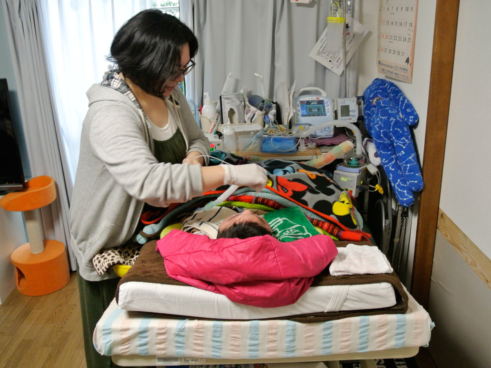
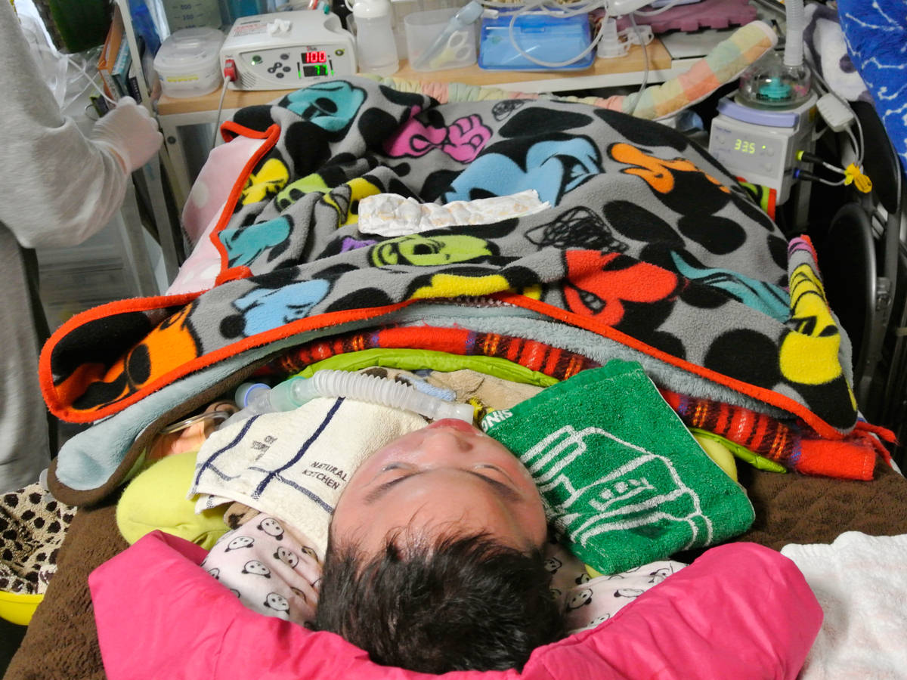
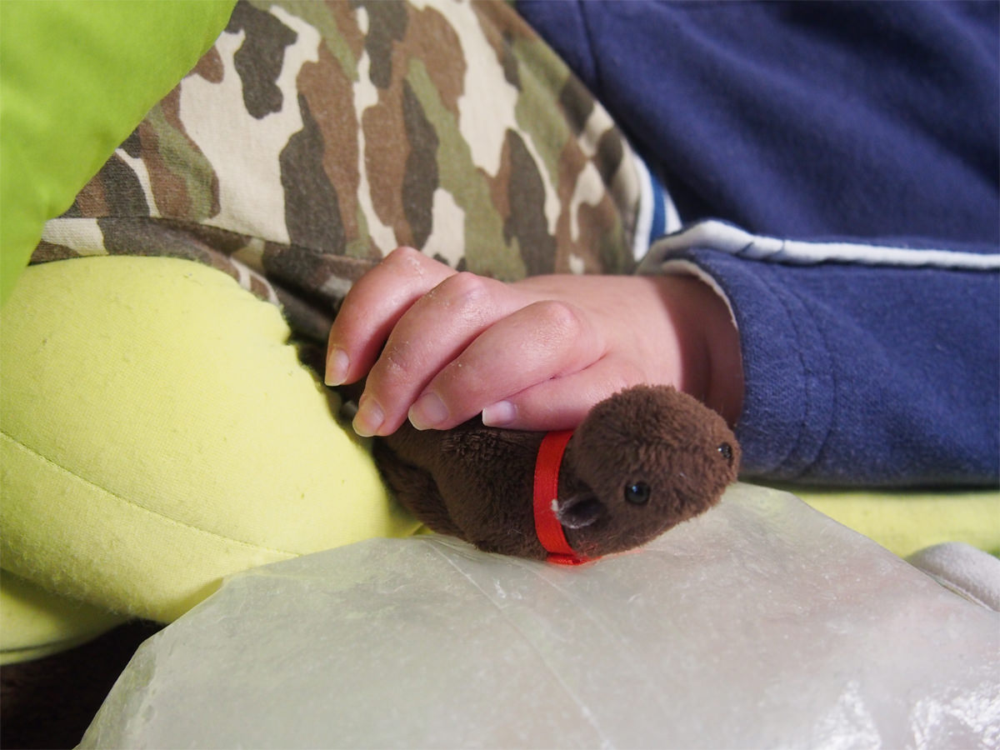
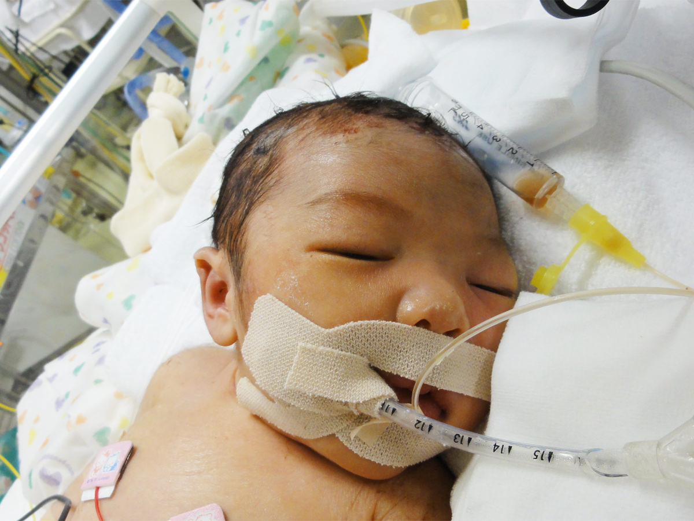
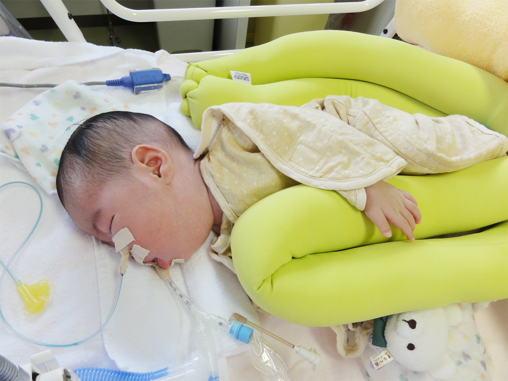
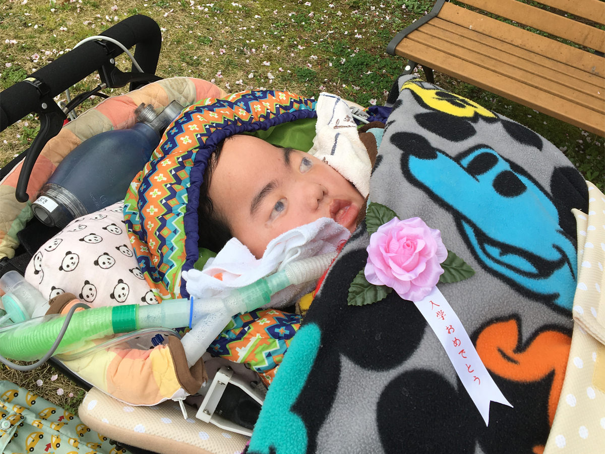
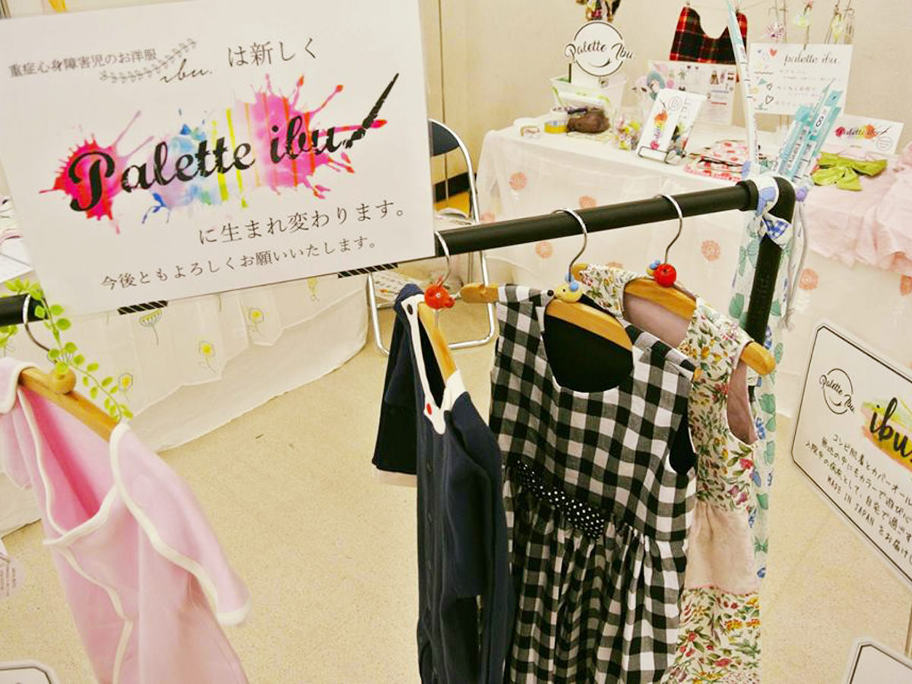
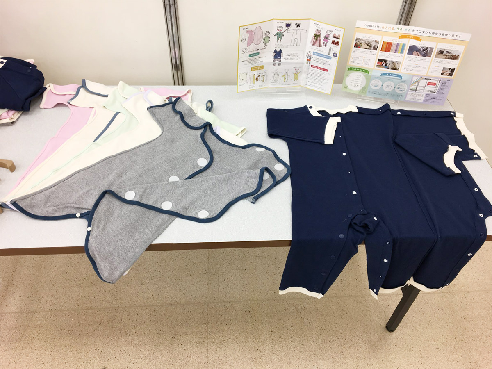

女子高生が怖かったです（笑）
奥井さんはどんな子どもでしたか？
奥井活発な子どもだったと思います。小学校でも木に登ってヤマモモを食べたり、砂場を無心に掘って水を出したり…今思うと、何が楽しかったんでしょう（笑）自然が多かったので、のびのび過ごしていましたね。
3歳からピアノをはじめて、音楽の先生に憧れていました。小学校のときに津軽三味線をはじめて、それを10年やって。中学校では吹奏楽部に入って、高校では、将来音楽の先生になりたかったので音大受験を見据えてファゴットをはじめました。
音大卒業後のお仕事について教えてください。
奥井海外のオーケストラのオーディションを受けて、数ヶ月合宿した後アジア20都市、日本国内も2年間かけてツアーでまわりました。
音楽の先生ではなく音楽家になったんですね。
奥井中高の教員免許はとったんですけどね。ちょっと挫折しました。教育実習で行った先の女子高生が怖くて（笑）あと元々ピアノが苦手で、合唱で弾くのが苦痛だったときに「私あんまり向いてないかな」と。
それよりきちんと楽器をやってみたいと思うときがあって、専門学校に行って葛藤しつつ、しばらくフリーで音楽をやっていて。その頃に主人と出会いました。

結婚のきっかけについて教えてください。
奥井1人暮らしをしていた家が更新の時期になって、「一緒に住もうか〜」と言っていたら、「じゃあ結婚しちゃえば？」と両親に言われて。付き合って10ヶ月くらいでした。姉が先に結婚していて、両親が「お前はどうなんだ」と焦っていたんです。
あれ？当時は奥井さんはまだ……
奥井23、4歳ですね。田舎だったので、周りの結婚が早いんですよ〜。
ご主人はどんな方ですか？
奥井同い年で、ほんわかしていますね。でも意外としっかりしたところもあり。仕事は、ゲームプログラマーをしてます。ゲームが好きなのでNintendo Switchも買ってますよ（笑）
もう諦めてました。今回はダメだな、と。
出産のときの話を聞かせてください。
奥井結婚して1年半くらいで妊娠しましたね。出産したのは40週のとき。予定よりちょっと遅れて。里帰り出産で個人の産院で。経過はずっと順調で、前期破水のために入院しました。
2日目に陣痛が微弱だったので、促進剤を投与して2、3時間後にはガンガン来てたのかな。分娩室に移動して、やっぱり陣痛がいまいち乗らないので、院長先生が来て「これ以上待ったらお母さんにも良くないから、帝王切開しましょう」と。
「準備をしますね」と病室を出た直後に、心拍をひろえなくなって、助産師が「ヤバイ」って。ああ、みたいな感じで。何かあったんだ、みたいな。
その日帝王切開ができる麻酔医がお休みの日だったので、今から呼ぶと15分以上かかる。で周産期医療センター（宮崎市郡医師会病院）に救急搬送されて、緊急帝王切開です。もう諦めてました。「もう今回はこの子は助からない、ダメだな」と。
搬送中先生と助産師が来てくれたんですけど、無言でしたね。お腹の中で脳内出血を起こしていたので、痙攣かなんか起こして、胎動があったんですけど。「あ、今動きました」って言って、もう黙って首を振って。
帝王切開して、オペ室を出るときに、起こされて。「赤ちゃんどうですか？」と聞いたら、「今頑張ってますよ」と言われて……言葉を濁してるなと。

私、笑ってたらしいんですよ
翌日に主治医から説明があったんですか？
奥井診断名は、低酸素性虚血性脳症による脳性麻痺。ほとんど植物状態です。産院の先生が来て、「助けられなくて、ごめんね」と言ってましたね。責めるところがなかったので、「ごめんね」と言われても、こちらも「すいません」みたいな感じで。
すべてにおいて、タイミングが悪かった。「オペの決断があと1分2分早かったら」とか、あのとき思うことはあったけど、もう仕方ないっていう……。
その後、主治医に言われたのが「こういうケースで訴訟することがあるけど、今回の内容だと意味がないと思うよ」と。結構ドライな若い先生だったんですよね。
産んで3日後には、「将来まず5歳まで生きることが難しい子どもです」「将来絶対在宅介護です」「お父さんどうする？移住する？」と立て続けに言われました。こっちは今の状態を飲み込むのがいっぱいいっぱいだったので、きついこと言うなあ、ちょっと待ってよ、って感じでした。あとは産科医療補償制度の対象になるので、病院で手配しますと言われました。
病室で、どんなお気持ちで過ごしていましたか？
奥井笑ってたらしいんですよね、私。それを見てた看護師さんたちが「やばい」って思ったらしくて。無理して笑っていると反動がすごいらしいので、できるだけ、泣かせようとしていました。
伊吹が生まれたことについて、本当はどう思ってるのかと。私は「困らせちゃダメだ」と思っていましたね。多分周りは気を使ってくれているから。
看護師さんも配慮してくれて、一番隅っこの個室を用意してくれてました。術後そんなに動けなかったし、動く気力がなかったので、伊吹のところに長時間いたという記憶もないです。NICUは空気が独特で、重いんですよね。子どもにも触れないし、歯がゆさしか感じなかったですね。
母親なのに何もできない。搾乳室に行っても、NICUでも早々に出ることができるお母さんたちだったので、「あなた子どもどうだったの？」という話をするのもつらかったです。臨床心理士さんも来てくれていましたね。

その後、泣くことはできましたか？
奥井産んで3日後くらいに主人が仕事の関係で帰ることになって、「いいよいいよ」と送り出したんですけど、主人は職場で戻るように言われて帰ってきたんです。そのときに、ダメでしたね（笑）
あと実家が畜産をやっていたんですけど、出産する少し前に、口蹄疫で全頭屠殺になって、父はすべてを失ったんです。初孫だった伊吹を出産することで喜ばせることができるはずだったのに、それができなかった。それがすっごい心残りで、一番悔しかったですね。
でも姉が1ヶ月後に出産したので、そこで父は抱っこができたのでいいんですけどね。私は、伊吹をまだ抱っこしてなかったので、意地でも抱っこしませんでしたけど。同じ空間にいるのが、きつかった。でも姉が悪いことをしたわけじゃないので、ぶつけるべきじゃないな、と思って。複雑な気持ちでしたね。
NICUにはどのくらい入院していたのですか？
奥井8ヶ月いました。
宮崎に移住するか、旦那さんだけ東京で暮らすか選択を迫られたんですよね。
奥井地元の施設に移ること前提で、先生に聞かれましたね。でも主人がゲームプログラマーなので、仕事を考えると東京で。家族一緒に暮らそうという話はしました。
東京の病院にツテがなく移送先がなかなか決まらなかったのですが、カルガモの家※の奈須先生になんとか繋げてもらって、東京の病院に移ることになりました。飛行機で移送するために、生後6ヶ月で気管切開の手術をしました。 ※カルガモの家：0〜18歳までの重症心身障害児の医療型障害児入所施設。
飛行機での搬送はJALもはじめてだったんですよね。
奥井そうですね。JALが国立研究開発法人国立成育医療研究センターの搬送チームと提携していて、伊吹はモデルケースとして搬送してもらうことになりました。当時、新燃岳が噴火して、福岡からの搬送ができなかったので、鹿児島空港から搬送することになりました。当日は鹿児島空港まで救急車で運んでもらって、そこから飛行機です。搬送チームの2人と、主治医と私、伊吹で搬送しました。
費用はどれくらいかかりましたか？
奥井全額自費で、搬送チームの交通費、ホテル代、JALの搬送代、主治医の往復の交通費と。保険はまったくないので、全部で20～30万円かかりました。
子どもは急変するので、2、3日前の予約しかできなくて。障害者手帳もまだ0歳なので持っていなかったので、同伴者割引も本来適用できない。そこは療育手帳を見せて何とか窓口でお願いして、入れてもらいましたけど。0歳なので航空券代かからないはずなんですけど、ストレッチャーで9席分くらいつぶすので、小児代金を払っています。

ブログをはじめました
伊吹くんが生まれて、ご主人の反応はどうでしたか？
奥井主人なりに受け入れようとしていたと思います。結構前向きな感じで。生まれて3、4ヶ月経った頃かな。「いつまでそんなに被害者ぶってるの？一番つらいのは、伊吹だよ」と言われて。言い方悪いですけど、主人に対して「いいよね、産んでないから」と思う気持ちも正直ありました。イラっとしたんですけど、「そうだよな、いつまでも言ってらんないよな」と。そこから、ブログをはじめました。
しばらく主人と離れて暮らしていたので、少しでも伊吹の状態がわかるようにと。私自身宮崎県ではじめての産科医療補償制度の対象で、今後どういう生活になるのかネットで調べたんですけど、情報がなかったんです。だから他のお母さんたちの参考になればいいなと思って。
ブログでコメントをもらって、実際に家に来て在宅介護の様子を見てもらったりしました。心構えや準備ができるかなと思って。私自身もお風呂の入れ方を教えてもらったり情報交換もできましたね。
いいですね！
奥井私自身が宮崎で在宅介護の様子を見学させてもらったんです。母が重心の看護師をしていたので、こういう子がどうなっていくのか、私はなんとなく経過がわかっていたんですが、主人はまったくわからないので。「こういう成長をしていくんだよ」と知っててもらいたかったんです。夫婦の有り様だったり、変化だったりを聞きました。
伊吹くんが生まれて、旦那さんの働き方は変わりましたか？
奥井主人は1回転職しています。それまでほとんど終電帰りという生活をしていたので、在宅介護になったときにやっていけなくなるね、という話をしていて。そのタイミングでヘッドハンティングがあったので、「勤務は18時頃まで。給料はこれくらい」という話をして、すごく理解のある職場に出会いましたね。ゲームプログラマーだと普通は徹夜仕事になることもあるので、今の職場はすごく恵まれているんです。
奥井さんは、出産後のお仕事はお休みを？
奥井産後も復帰するつもりでやっていたのですが、それができない……というのがあって。オーケストラのなかだと、バイオリンだと沢山人がいるんですが、ファゴットは1人、ひとつの楽譜があって、役割がある。責任が持てないんです。2、3ヶ月先の仕事の依頼をいただいても、子どもが急変することもあるので、お受けできません、と。

日々のケアについて教えてください。
奥井主人と時間を決めて分担しています。私が朝7時に起きて、21時まで伊吹を大体みて、主人が23時のケアの担当。私は朝2時のケアをするので、目覚ましかけて。注入の片付けと、薬を飲むのと、導尿ですね。主人は伊吹大好きなので、よくやってくれる方だと思います。ぬいぐるみを買ってきたりしますよ。「ヒゲが痛そうだね〜」って、ヒゲを切ってくれたり。いろいろ考えてくれますね。
母は基本的に伊吹にはノータッチです。自分の孫にあたるので、「何か事故があったときに怖い」という話があったので。代わりに、家事をお願いしています。あとは訪問看護ステーションと、訪問入浴も利用しています。
palette ibu.のお仕事は日中に行っているのですか？
奥井そうですね。ただ縫製工場に行くときは平日になるので、そのときは主人に仕事を休んでもらっています。基本的には、家を離れられないですね。
リフレッシュ方法について教えてください。以前やられていた楽器は吹いていますか？
奥井楽器はやらなくなりました。私が吹かない時期に活躍している友人を見ると、そっちにはいけないんだよな、練習していても意味がないなと思うと、そういう気にはなれないですね。それよりミシンをしているあいだは忘れられたりします。
あと月に1回3時間くらいは外出させてもらっています。カフェに行ったり、ブックオフで漫画や雑誌を立ち読みしたり。友人たちとローストビーフを食べ比べたり、豪華な食べ放題に行ったりします。そういうことをする友人がいるのはありがたいですね。
ご家族で外出することはありますか？
奥井できるだけ出かけるようにしてます。伊豆に温泉旅行にいったり、ディズニーランドに行ったりしましたね。車椅子に乗った状態で行くので、電車やクルーズに乗ります。これからだと花見に行ったりとか。

伊吹くんに弟さんがいらっしゃるんですよね。
奥井年子ですね。今度、年長さんになります。弟を産むことについては、私が「絶対元気な子を産める」と、意地もありましたね。伊吹が生まれたときに遺伝子検査もして、2人とも異常はなかったので、じゃあできるよね、産んでやると思って。主人は最初は抵抗があったのかな。でも、大丈夫でしたね。帝王切開だったので1年は待って、在宅介護がはじまる前に妊娠がわかって。
伊吹くんと弟さんの仲はいいですか？
奥井うん、仲いいと思います。私がちょっと用事があって部屋を離れるときに、「いぶ兄守っててね」と言うと、「うん、いぶ兄守っとく！」と言いますね。あとは何か物をもらったりすると、「いぶ兄に見せてくる」と言って見せに行ったり。
時々、伊吹の隣で寝たいと言うので、そういうときは伊吹をちょっとずらして、隣で寝させています。
伊吹くんの障害のことを弟さんには話していますか？
奥井まだわからない年齢だとは思うので、あまり…言ってないかな。
一緒に遊ぶことはありますか？
奥井この前は人生ゲームをやってるときに、伊吹の分もやっていましたね。「いぶ兄、回すよー」と。本人的にも多少気にして動いてくれているのかなと。ただ伊吹からは反応というかアクションがないので、深くは突っ込まず、という感じですかね。
伊吹くんは、においなどはわかるんですか？
奥井無いです。目も耳も聞こえない。ほとんど脳死状態なので。でも嫌なことがあると頬が赤くなったりしますよ。看護師さんがからかったり、お父さんの悪口を言っていると、怒りますね。お風呂に入ったら少し頬がゆるんだり。昨日は髪を切ったんですけど、嫌だったみたいですね。
わかるんですね。
奥井そう思わないと、やってられないというところはありますね。やっぱり反応がないので。
洋服をつくることが、私にとっての育児
洋服作りは昔からやっていたんですか？
奥井伊吹を妊娠中に、普通のお母さんが考えるように、スタイとかベビードレスを作っていたくらいです。この子が生後3ヶ月のときに、NICUのウォーマー（保育器）を卒業して、洋服を着ようかとなったんですけど、病院側が用意するのが普通の新生児用の服で。「袖を通すとき、腕はどう曲げればいいんだろう」と思って、もっと着やすい服を作ってあげたいな、と。本を買って、普通の新生児用の型紙からアレンジして作りはじめました。

それをはじめて着せたときに看護師さんが喜んでくれて、「やっと母親らしいことができた」って。母乳をあげることもできていなかったので。この子に対する私の育児の仕方がこれかな、と思いました。
palette ibu.を立ち上げたきっかけを教えてください。
奥井この子が4歳のときに危篤状態になって、家に連れて帰りますとなったときに、「この子がいなくなったら、私何しよう？」と思いました。楽器も、どんどん上手い若い人が出てくるし、私はブランクがあるし、もう戻れない。
そんなときに、「私洋服作れるじゃん」って。「この子がいたことを残さなきゃ」と思いました。
ずっと思ってたんです。お店やりたいな、と。この4、5年のあいだ、お店はない、企業もやってない、どんどん需要は増えてるのに、という実感があって、じゃあ私がやろうと。作れば、次のお母さんが助かるかな、と。
医療的ケア児に限らず、健常児も怪我したり入院したりする。洋服のバリアフリーというか、どっちでも着れるデザインがあってもいい。元気なお子さんは、怪我が治った後も着れるような。
palette ibu.ではどのような服を作っているんですか？
奥井「この服を着て、お出かけをしたいな」と思えるようなものを作っています。点滴したり、血圧測ったり、体温を測ったり、オムツ替えをするときに、全部脱がなくてもケアができるような作りにしています。新生児の赤ちゃんだと腕を通すのが大変だったりするので、あまり体を動かさなくても着やすいように。
肌が弱い子も多いので、生地も当たりがいいものを使ってます。注文の際には色や形の希望やサイズを聞いて、基本的にはオーダーメイドですね。
palette ibu.をはじめて、お客さんからの反応はどうですか？
奥井ご両親からは「看護師さんに褒められて嬉しい」と言ってもらえますね。着せるのを苦労していた方が多いし、可愛いので、喜んでくれます。ケアがしやすい服なので点滴をするときにも楽だったり、CTを撮るときに着たまま撮ることができるのは技師さんも助かるし、低体温の子はあまり脱がせたくないので、いいですね。
普通の服だと看護師さんがいるときじゃないと着替えをできなかったので、作ったときにまず喜んだのは看護師さんでした。
現在のpalette ibu.の体制を教えてください。
奥井現在はオーダーは受けていません。今後、palette ibu.で販売するのは、60〜120サイズのベビー・トドラーサイズの医療を必要とする子どものための病児服です。
palette ibu.の病児服とは、医療を必要とする子どもがラクに着られて、カンタンに着せられるかわいくてかっこいい洋服です。具体的には工場生産とハンドメイド作家による手作りのコンビ肌着とカバーオールとフォーマル、介護生活から生まれた小物になります。
販売体制は、6月にECサイトをリニューアルオープンし、ibu.basic（無地タイプのコンビ肌着とカバーオール）はAmazonでも販売予定です。医療機関には実際に実物を見たほうが病児服を理解していただけると考え、サンプル2枚を配布しています。医療機関の方にはお問い合わせいただけたらと思います。

自分自身が変わりたい
今後の目標を教えてください。
奥井伊吹がもうすぐ小学校に入るので、訪問籍なんですけど、体調のいいときは学校に行って、友だちを作りたいなあと。
palette ibu.のことだと、子ども病院の売店に商品を置いてもらって、3年後には黒字化して、全国展開していくという目標を立てています！今まで物事をなあなあにしてしまう性格だったんですけど、今は縫製工場とか関わる人がいて迷惑をかけてしまうので、焦らず物事をクリアして、責任持ってやっていきたいですね。自分自身が、変わりたいです。
伊吹くんと同じ状態で出産した人に伝えたいことはありますか？
奥井同じような状態の人がいたときに、自分から話しかけてみたらどうかな、と。東京に引っ越したばかりのときに、同じ病室で、同じように寝たきりのお子さんがいるお母さんがいたんです。そのお母さんがすごく塞ぎ込んでいて。私もそれまでママ友が全然できなかったので、友だちが欲しくて、話しかけたんです。
そしたら、看護師さんたちに「ありがとう」と言われました。そのお母さんがすごく変わった、明るくなったと。私が話しかけたことで、そのお母さんも病室の他のお母さんと話すようになったと言われて。
自分のことでいっぱいいっぱいだと思うんですけど、話し相手が欲しかったら、待つより動く。やっぱり、動かないとね。
ご協力いただいた奥井さま、伊吹くんに心から感謝します。